View on GitHub
ValEUs Interactive Database
Civil society initiatives counteracting contestations of EU values
Civil Society EU Engagement Visualisations
This interactive database visualizes how civil society organisations in Europe and beyond counteract contestations to EU values — freedom, democracy, equality, rule of law, and human rights — across domains such as peacebuilding, fundamental rights, sustainability, migration, trade, digitalization, conflict, and climate change. :contentReference[oaicite:9]{index=9}
Explore the visualisations


Contribute an initiative
This database is an ongoing attempt. If you are aware of initiatives that should be added, please submit them via the form below. New entries will be moderated and added regularly. :contentReference[oaicite:13]{index=13}